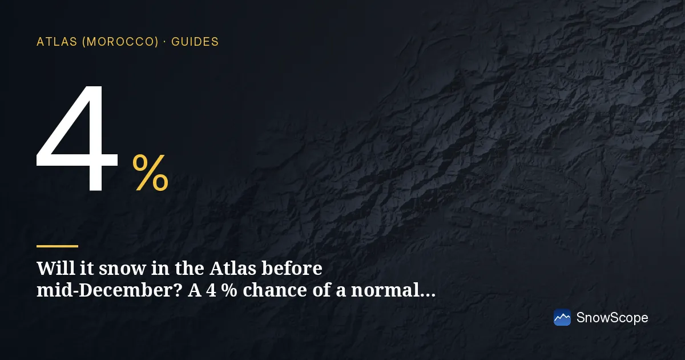
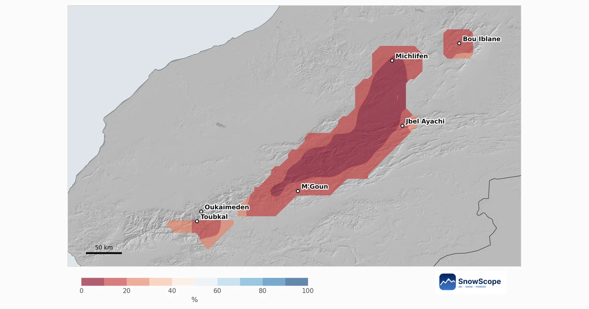
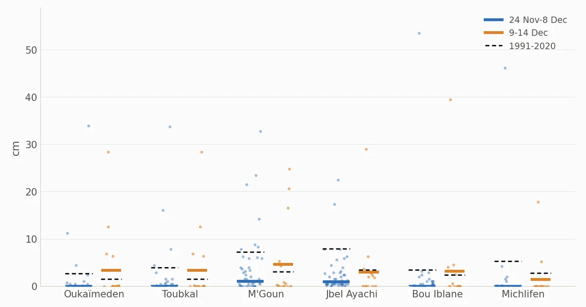
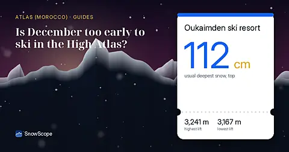

Will it snow in the Atlas before mid-December? A 4 % chance of a normal fortnight (ECMWF, NOAA, NASA, 24 November 2026)
The Atlas has started the winter almost bare. NASA's MODIS saw snow on only 2,931 km² of the ground above 1,500 m between 16 and 23 November, 6 % of what it could see, most of it on the highest summits. Will December change that? We ran the numbers on the full ECMWF ensemble of 24 November (50 members, 15 days), the NOAA GEFS ensemble for days 16 to 21 and NOAA's forecast of the North Atlantic Oscillation. The short answer: the next two weeks look dry, with only 4 % of members giving more snow than a normal late November and early December, and a faint, uncertain hope for the second week of December.
See the live snow forecast for Oukaïmeden in the SnowScope appSnow depth, powder alerts and the 3D map, free.

Snow on the ground today: NASA MODIS
The Atlas is the easy case for an optical sensor: skies were clear over 98 % of the mountain ground on 20 November and over 92 % on 23 November. Combining Terra (morning) and Aqua (afternoon) and keeping the last clear look of each 500 m pixel, 92 % of the ground was seen on 23 November itself.
Above 1,500 m, MODIS counts 2,931 km² of snow and 48,948 km² of bare ground. By height the white share grows slowly: 3 % between 1,500 and 1,750 m, 8 % between 2,000 and 2,250 m, 13 % between 3,000 and 3,250 m and 31 % above 3,500 m. No 250 m height band is mostly white, so there is no snow line yet: only patches on the Toubkal and M'Goun massifs and in north-facing gullies. Gascoin and colleagues showed with the same MODIS products that such patchy autumn cover is common in the Atlas and often melts before the first real storm.

The next 15 days: the ECMWF ensemble
We summed the snowfall of each of the 50 members on the 0.25° grid. Over the mountain cells above 1,500 m the ensemble mean is 0.1 mm of snow water for 24 to 30 November against a normal of 1.6 mm, and 0.9 mm for 1 to 8 December against 2.7 mm. With fresh snow at about 100 kg/m³ (Judson and Doesken 2000), 1 mm of water makes about 1 cm of snow, so this is a fortnight of 0.9 cm against 4.4 cm normally.
The probability is the share of members above the normal, P = (1/N) Σ 1[S_i > normal], with N = 50. Region-wide it is 4 %. Place by place: Oukaïmeden (grid cell at 2,045 m) median 0 cm, wettest tenth 0.8 cm, normal 2.7 cm, chance above normal 6 %. M'Goun (cell at 2,723 m): median 1 cm, wettest tenth 8.3 cm, normal 7.2 cm, chance 14 %. Jbel Ayachi: median 0.9 cm against a normal of 7.9 cm, chance 4 %. In the Middle Atlas, Michlifen and Bou Iblane have only 2 % of members above normal.
Even when it does precipitate, the height matters. At the Oukaïmeden cell only 25 % of the forecast precipitation falls as snow; at the higher M'Goun cell it is 84 %. This snow share φ = S / P is the number to watch if a wet spell shows up: the forecast cells are far below the summits (Toubkal's cell sits at 2,315 m, the summit at 4,167 m), so φ is a floor for the high ground.

Days 16 to 21: NOAA GEFS
For 9 to 14 December we used the 16 complete members of NOAA's GEFS run of 24 November, counting 6-hour precipitation only when the member's snow flag is on (S = Σ P6h · CSNOW). Across the Atlas, 25 % of members beat the normal of those six days, with a mean of 2.7 mm against 2.1 mm. Near Oukaïmeden and Toubkal the mean is 3.4 mm against a normal of 1.5 mm, with 25 % of members above it; at M'Goun 31 %.
That mean is pulled up by two or three snowy members out of 16, and at day 16 to 21 a single member is a scenario, not a forecast (Vitart 2014). So the honest reading is: the door opens a little in the second week of December, nothing more.
Why the North Atlantic Oscillation matters for Morocco
Most Atlas snow comes from Atlantic lows that dive south of their usual track, and that happens far more often when the NAO is negative (Hurrell 1995; Knippertz et al. 2003). NOAA's GEFS forecast of the NAO is positive at first, +0.97 on 26 November and +0.96 on 27 November, which fits the dry signal: the storm track runs over the British Isles and Scandinavia. From 1 December it eases to around -0.29, with 60 % of member-days negative from day 8, but the 10th-90th percentile range at day 15 still spans -1.04 to +0.83.
A clearly negative NAO in the forecasts of the coming days would be the first sign of a real change. Cassou (2008) showed that the Madden-Julian Oscillation in the tropics can trigger such negative NAO phases about 10 days later, one reason why sub-seasonal odds are worth watching even when the next week is dry.

Why it matters beyond skiing
In the Tensift and Oum Er-Rbia basins, snow is a water reservoir. Boudhar et al. (2009) showed that snowmelt makes a large part of spring flow in the High Atlas rivers, and Baba et al. (2018) reconstructed the snow water of the Ourika catchment from 2000 to 2018 with NASA's MERRA-2 data and MODIS snow maps, then sharpened it with Sentinel-2 images. A December without snow is not lost, since the big Atlas storms often come in January and February, but every dry week shortens the season in which snow can build.
Each number in this post is for a forecast cell of about 25 km, whose mean height is 1,000 to 2,000 m below the summits. Ratios to the normal of the same cell are reliable; raw centimetres on a summit are not. For the next 5 days, use a daily forecast; for the mountain, use local observations.

Tips for skiers
- Planning a ski day at Oukaïmeden before mid-December: expect the snowmaking pistes and patches only, unless the forecast turns.
- Watch the NAO: a clearly negative value in the 10-day forecasts is the first sign of Atlantic storms reaching Morocco.
- High trekking (Toubkal, M'Goun) stays mostly dry and cold in the coming fortnight: icy patches on north faces, little fresh snow.
- We update these odds as new runs come in; a single run beyond day 10 can change a lot.
References and credits
- ECMWF open data: IFS ensemble forecasts (ENS), run of 24 November 2026 00 UTC, 0.25° grid, snowfall and total precipitation (CC BY 4.0) www.ecmwf.int/en/forecasts/datasets/open-data
- Zhou, X. et al. (2022). The development of the NCEP Global Ensemble Forecast System version 12. Weather and Forecasting 37, 1069-1084 doi.org/10.1175/WAF-D-21-0112.1
- NOAA Global Ensemble Forecast System (GEFS) open data on AWS: run of 24 November 2026 00 UTC, 0.5° grid, APCP and CSNOW registry.opendata.aws/noaa-gefs/
- Hersbach, H. et al. (2020). The ERA5 global reanalysis. Quarterly Journal of the Royal Meteorological Society 146, 1999-2049 (monthly means 1991-2020, Copernicus Climate Change Service) doi.org/10.1002/qj.3803
- NOAA Climate Prediction Center: daily NAO, AO, PNA and AAO index forecasts from the GEFS ensemble www.cpc.ncep.noaa.gov/products/precip/CWlink/
- Knippertz, P., Christoph, M. and Speth, P. (2003). Long-term precipitation variability in Morocco and the link to the large-scale circulation in recent and future climates. Meteorology and Atmospheric Physics 83, 67-88 doi.org/10.1007/s00703-002-0561-y
- Hurrell, J.W. (1995). Decadal trends in the North Atlantic Oscillation: regional temperatures and precipitation. Science 269, 676-679 doi.org/10.1126/science.269.5224.676
- Cassou, C. (2008). Intraseasonal interaction between the Madden-Julian Oscillation and the North Atlantic Oscillation. Nature 455, 523-527 doi.org/10.1038/nature07286
- Vitart, F. (2014). Evolution of ECMWF sub-seasonal forecast skill scores. Quarterly Journal of the Royal Meteorological Society 140, 1889-1899 doi.org/10.1002/qj.2256
- Boudhar, A., Hanich, L., Boulet, G., Duchemin, B., Berjamy, B. and Chehbouni, A. (2009). Evaluation of the Snowmelt Runoff Model in the Moroccan High Atlas Mountains using two snow-cover estimates. Hydrological Sciences Journal 54(6), 1094-1113 ird.hal.science/ird-00491127
- Baba, M.W., Gascoin, S., Jarlan, L., Simonneaux, V. and Hanich, L. (2018). Variations of the snow water equivalent in the Ourika catchment (Morocco) over 2000-2018 using downscaled MERRA-2 data. Water 10, 1120 doi.org/10.3390/w10091120
- Baba, M.W., Gascoin, S. and Hanich, L. (2018). Assimilation of Sentinel-2 data into a snowpack model in the High Atlas of Morocco. Remote Sensing 10, 1982 doi.org/10.3390/rs10121982
- Gascoin, S., Hagolle, O., Huc, M., Jarlan, L., Dejoux, J.-F., Szczypta, C., Marti, R. and Sánchez, R. (2015). A snow cover climatology for the Pyrenees from MODIS snow products. Hydrology and Earth System Sciences 19, 2337-2351 doi.org/10.5194/hess-19-2337-2015
- Riggs, G.A., Hall, D.K. and Román, M.O. (2019). MODIS Snow Products Collection 6.1 User Guide. NASA / NSIDC nsidc.org/sites/default/files/c61_modis_snow_user_guide.pdf
- NASA Global Imagery Browse Services (GIBS): MODIS_Terra_NDSI_Snow_Cover and MODIS_Aqua_NDSI_Snow_Cover, 16-23 November 2026 www.earthdata.nasa.gov/engage/open-data-services-software/earthdata-developer-portal/gibs-api
- Copernicus DEM GLO-90 (European Space Agency, Copernicus programme) doi.org/10.5270/ESA-c5d3d65
- Judson, A. and Doesken, N. (2000). Density of freshly fallen snow in the central Rocky Mountains. Bulletin of the American Meteorological Society 81, 1577-1587 doi.org/10.1175/1520-0477(2000)081<1577:DOFFSI>2.3.CO;2
About these numbers
Snowfall: ECMWF ensemble (50 members, 0.25°) to day 15, NOAA GEFS (16 members, 0.5°) for days 16-21, compared with the 1991-2020 normal of the same calendar days. Snow on the ground: NASA MODIS, last clear view 16-23 November. Mountain cells above 1,500 m.
Cite this report
For research, teaching or the press: the numbers and charts are free to reuse under CC BY 4.0 with this citation.
SnowScope (2026), Will it snow in the Atlas before mid-December? A 4 % chance of a normal fortnight (ECMWF, NOAA, NASA, 24 November 2026), https://snowscope.app/blog/en/2026/11/atlas-snow-outlook-next-3-weeks-ecmwf-noaa-24-november-2026.html, accessed 2026-11-24
SnowScope (Atlas Labs). (2026, November 24). Will it snow in the Atlas before mid-December? A 4 % chance of a normal fortnight (ECMWF, NOAA, NASA, 24 November 2026). SnowScope snow reports. https://snowscope.app/blog/en/2026/11/atlas-snow-outlook-next-3-weeks-ecmwf-noaa-24-november-2026.html
BibTeX
@misc{snowscope2026atlassnowoutlooknext3wee,
author = {{SnowScope (Atlas Labs)}},
title = {Will it snow in the Atlas before mid-December? A 4 % chance of a normal fortnight (ECMWF, NOAA, NASA, 24 November 2026)},
year = {2026},
month = nov,
howpublished = {\url{https://snowscope.app/blog/en/2026/11/atlas-snow-outlook-next-3-weeks-ecmwf-noaa-24-november-2026.html}},
note = {Published 2026-11-24 16:40 UTC; accessed 2026-11-24}
}· CC BY 4.0 · Methods, data and tools →
Follow Oukaïmeden
Free: a message when fresh snow is coming, and the forecast every morning.
More snow reports

On 15 December at Michlifen, 89% of winters are nearly bare. The best chance comes after a storm, not on the calendar. Data from 13 November 2026.

December brings only 18 cm typical depth at mid-mountain in Oukaimeden, versus 53 cm in March. Early season is thin but possible. Data 13 November 2026.

No snow yet at Oukaïmeden on 12 November. The Atlas peaks sit bare; the winter season typically peaks in March with 58 cm at the top.